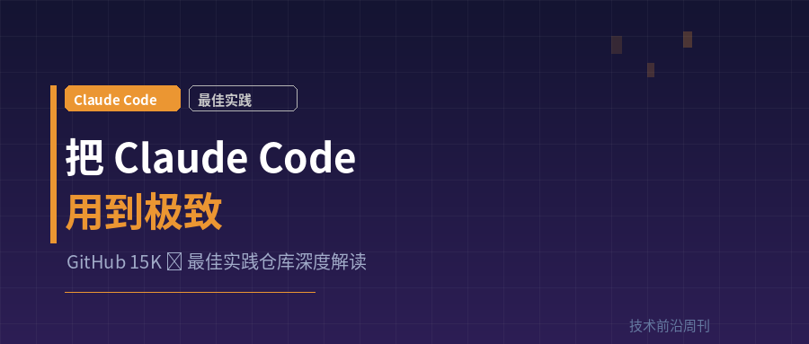

👆 点击关注，每周获取最新技术趋势
practice made claude perfect
15K ⭐ 的 Claude Code 最佳实践指南，到底在讲什么？
GitHub 上有个叫 claude-code-best-practice 的仓库，三月份涨到了 15K 星。作者 shanraisshan 在 README 里写了句狠话：practice made claude perfect。
这个 repo 不是一个应用项目，而是一份参考实现——它用真实可跑的代码展示了 Claude Code 的 Commands、Agents、Skills、Hooks 怎么组合使用。不是理论教程，是可以直接 clone 下来玩的示例工程。
我把这个 repo 和社区里的其他最佳实践综合整理了一下，提炼出最核心的几个经验。如果你已经在用 Claude Code，但总觉得没发挥出全部能力，这篇就是为你写的。
01 核心架构：Command → Agent → Skill
这个 repo 最大的价值，是它用一个天气查询的实例，完整演示了 Claude Code 的三层架构：
Command（命令） → 用户入口，收集参数，编排流程
Agent（智能体） → 执行工作，独立上下文，有自己的工具和权限
Skill（技能） → 领域知识，按需加载，不占用上下文窗口
具体到实例：用户输入 /weather-orchestrator 这个 Command，它先问你要摄氏度还是华氏度，然后调用 weather-agent。Agent 自带预加载的 weather-fetcher Skill 去查温度，再调用 weather-svg-creator Skill 生成一张漂亮的 SVG 天气卡片。
每层只做一件事，职责清晰，可复用。这个模式的精髓是渐进式披露（Progressive Disclosure）——Skill 的内容只有在被 Agent 调用时才进入上下文窗口，平时只加载一行描述。这对省 Token 至关重要。
02 CLAUDE.md：写好这个文件比什么都重要
社区里有个经典案例：有人用 500 词的 CLAUDE.md，把一个 500MB 的坏项目修到只剩 30KB 的干净代码。这不是段子，是真实案例。
一些关键原则：
控制长度。单个 CLAUDE.md 控制在 200 行以内，60 行更理想。太长了 Claude 会有选择地忽略。Monorepo 项目用多个 CLAUDE.md 分层加载，不要硬塞在一个文件里。
写规则，不写感受。「MUST」加全大写也不能保证 Claude 一定听，这是 Reddit 上被讨论最多的痛点。更好的做法是用具体的、可执行的指令，而不是抽象的「必须」。
别把 memory.md 当救命稻草。作者直接说了：memory.md、constitution.md 都不能保证任何事情。真正管用的是结构化的 CLAUDE.md + 分层加载。
03 Sub-Agent：别让主会话胀死
Claude Code 的上下文窗口是有限的，填满后性能会明显下降。这个 repo 重点强调的一个实践是：用 Sub-Agent 把耗上下文的任务卸载出去。
比如你要做代码审查，不要在主会话里摆开十几个文件慢慢看。创建一个专门的 code-reviewer Agent，给它限定工具权限、指定模型、预加载相关 Skill，让它在独立上下文里完成任务，再把结果返回主会话。
用法示例：在 prompt 里说 use subagents 就能让 Claude 自动拆分任务给子智能体。这样主会话保持干净，不会因为一个大任务把上下文吃光。
几个 Agent 配置的关键字段：tools（工具白名单）、model（haiku/sonnet/opus）、skills（预加载技能）、memory（持久化记忆）、maxTurns（最大循环次数）。每个字段都值得仔细调。
04 上下文管理：大多数人踩的坑
这是我觉得整个社区最有价值的共识：Claude Code 的几乎所有最佳实践，都是围绕一个约束展开的——上下文窗口填满得很快，填满后性能会崩。
具体怎么做：
避免「笨区」。在上下文用到 50% 时就手动 /compact，不要等到系统自动压缩。切换任务时用 /clear 重置上下文。
MCP 别贪多。有人总结得很精辟：如果你的 MCP 占了超过 20K Token，那实际能用于工作的上下文就所剩无几。精简 MCP 配置，只挂真正需要的服务。
小任务直接用原生 Claude Code。作者明确说：vanilla CC 在小任务上比任何复杂工作流都好用。别为了用工具而用工具。
05 先规划再动手，这不是废话
社区里多个独立来源都得出了同一个结论：在生产级项目里，规划先行是不可协商的。
推荐的流程：先进入 Plan 模式，给 Claude 高层描述和现有代码指引，让它研究并提出方案。你审查方案，不满意就说哪里不对、让它改。在计划阶段捕捉误解，比写完代码再返工便宜太多。
一个很实用的技巧：用一个模型做规划，用另一个模型审查。比如 Opus 做方案，Sonnet 来挑刺。跨模型 QA 能发现很多单模型发现不了的问题。
06 Hooks：让质量检查自动跑
这个 repo 有一套很有趣的 Hook 系统——包括音效通知。没错，Claude 提交代码时会播放声音，子智能体启动/停止时也有音效。听起来像噩头，但实际体验很好——你可以不盯屏幕就知道 Claude 在干什么。
但更实用的是自动质量检查 Hook。比如配置一个 Stop Hook：Claude 每次完成响应后，自动跑构建、检查 TypeScript 错误。如果错误少于 5 个，直接让 Claude 修；超过 5 个，建议启动专门的 error-resolver Agent。
注意一个坑：自动格式化 Hook 可能会消耗大量上下文 Token。有人报告 3 轮就吃掉 160K Token。建议把格式化放在会话间隙手动跑，而不是每次自动触发。
07 还有一些散但很管用的技巧
挑战 Claude。不要只会说 fix。试试：「烤问我这些改动，不通过别提 PR」，或者「你现在知道所有信息了，抛弃现有方案，重新实现一个优雅的解法」。结果往往更好。
勤提交。让 Claude 每完成一个步骤就 commit。这样出问题可以随时 revert，不用从头再来。
开思考模式。始终开启 thinking mode，配合 Explanatory 输出风格，可以看到 Claude 的推理过程和 Insight 框。遇到难题用 ultrathink 关键词触发深度推理。
别堆自定义命令。有人说得很到位：如果你有一长串复杂的自定义 slash command，你就创建了一个反模式。Claude Code 的精髓是用自然语言就能得到结果，别把它又变成了指令行工具。
08 怎么开始？
作者给的三步走近路：
1. 先把这个 repo 当课程读。搞清 Command、Agent、Skill、Hook 各是什么，再动手。
2. Clone 下来实际操作。跑一遍 /weather-orchestrator，听听 Hook 音效，跑跑 Agent 团队。亲手感受比看文档强十倍。
3. 回到你自己的项目，让 Claude 建议哪些最佳实践适合你。把这个 repo 作为参考传给 Claude，它就知道有哪些能力可用。
说实话，Claude Code 的学习曲线比大多数人想象的陡。它不是一个聊天机器人，而是一个智能体编程环境——你描述想要什么，Claude 来研究、规划、实现。但前提是，你得学会态度给它正确的上下文、合理的约束、和清晰的任务边界。
practice made claude perfect —— 其实反过来也成立：perfect practice made 你 更有的放矢。工具在那里，能用到什么程度，纯看你愿意花多少功夫去理解它。
仓库地址：github.com/shanraisshan/claude-code-best-practice，建议收藏。
— END —
觉得有用？ 点赞 👍 转发 🔄
关注公众号，每周获取 AI & 开源技术前沿动态